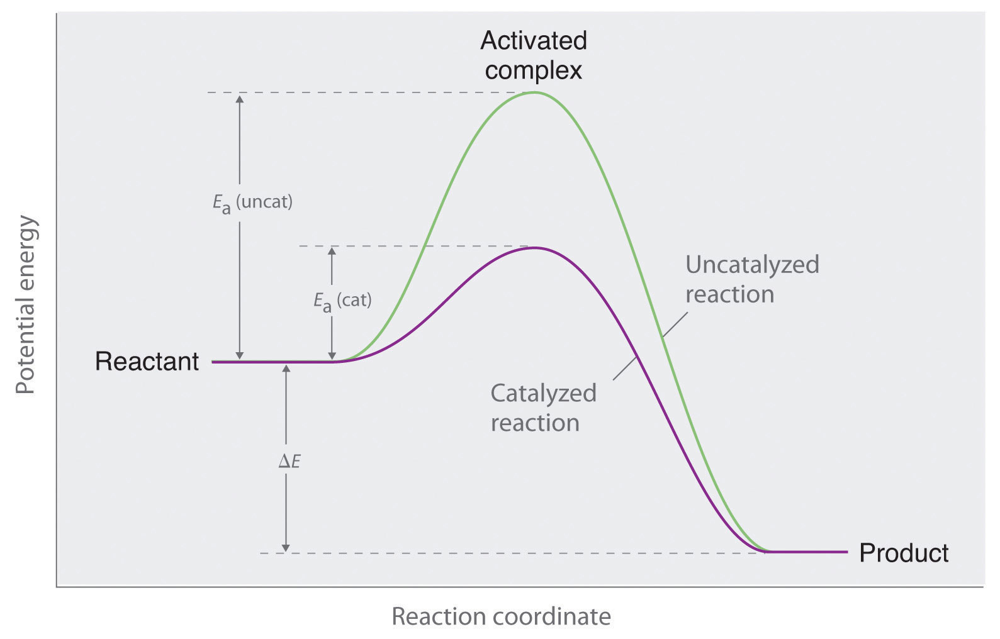
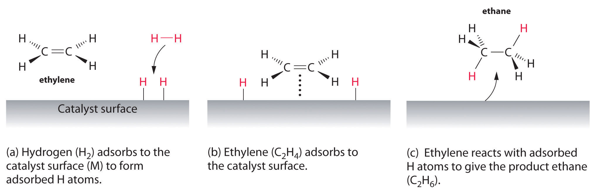

Chapter 3 "Chemical Reactions" described catalystsA substance that participates in a reaction and causes it to occur more rapidly but that can be recovered unchanged at the end of the reaction and reused. Catalysts may also control which products are formed in a reaction. as substances that increase the reaction rate of a chemical reaction without being consumed in the process. A catalyst, therefore, does not appear in the overall stoichiometry of the reaction it catalyzes, but it must appear in at least one of the elementary reactions in the mechanism for the catalyzed reaction. The catalyzed pathway has a lower Ea, but the net change in energy that results from the reaction (the difference between the energy of the reactants and the energy of the products) is not affected by the presence of a catalyst (Figure 14.26 "Lowering the Activation Energy of a Reaction by a Catalyst"). Nevertheless, because of its lower Ea, the reaction rate of a catalyzed reaction is faster than the reaction rate of the uncatalyzed reaction at the same temperature. Because a catalyst decreases the height of the energy barrier, its presence increases the reaction rates of both the forward and the reverse reactions by the same amount. In this section, we will examine the three major classes of catalysts: heterogeneous catalysts, homogeneous catalysts, and enzymes.
A catalyst affects Ea, not ΔE.
Figure 14.26 Lowering the Activation Energy of a Reaction by a Catalyst
This graph compares potential energy diagrams for a single-step reaction in the presence and absence of a catalyst. The only effect of the catalyst is to lower the activation energy of the reaction. The catalyst does not affect the energy of the reactants or products (and thus does not affect ΔE).
In heterogeneous catalysisA catalytic reaction in which the catalyst is in a different phase from the reactants., the catalyst is in a different phase from the reactants. At least one of the reactants interacts with the solid surface in a physical process called adsorption in such a way that a chemical bond in the reactant becomes weak and then breaks. Poisons are substances that bind irreversibly to catalysts, preventing reactants from adsorbing and thus reducing or destroying the catalyst’s efficiency.
An example of heterogeneous catalysis is the interaction of hydrogen gas with the surface of a metal, such as Ni, Pd, or Pt. As shown in part (a) in Figure 14.27 "Hydrogenation of Ethylene on a Heterogeneous Catalyst", the hydrogen–hydrogen bonds break and produce individual adsorbed hydrogen atoms on the surface of the metal. Because the adsorbed atoms can move around on the surface, two hydrogen atoms can collide and form a molecule of hydrogen gas that can then leave the surface in the reverse process, called desorption. Adsorbed H atoms on a metal surface are substantially more reactive than a hydrogen molecule. Because the relatively strong H–H bond (dissociation energy = 432 kJ/mol) has already been broken, the energy barrier for most reactions of H2 is substantially lower on the catalyst surface.
Figure 14.27 Hydrogenation of Ethylene on a Heterogeneous Catalyst
When a molecule of hydrogen adsorbs to the catalyst surface, the H–H bond breaks, and new M–H bonds are formed. The individual H atoms are more reactive than gaseous H2. When a molecule of ethylene interacts with the catalyst surface, it reacts with the H atoms in a stepwise process to eventually produce ethane, which is released.
Figure 14.27 "Hydrogenation of Ethylene on a Heterogeneous Catalyst" shows a process called hydrogenation, in which hydrogen atoms are added to the double bond of an alkene, such as ethylene, to give a product that contains C–C single bonds, in this case ethane. Hydrogenation is used in the food industry to convert vegetable oils, which consist of long chains of alkenes, to more commercially valuable solid derivatives that contain alkyl chains. Hydrogenation of some of the double bonds in polyunsaturated vegetable oils, for example, produces margarine, a product with a melting point, texture, and other physical properties similar to those of butter.
Several important examples of industrial heterogeneous catalytic reactions are in Table 14.8 "Some Commercially Important Reactions that Employ Heterogeneous Catalysts". Although the mechanisms of these reactions are considerably more complex than the simple hydrogenation reaction described here, they all involve adsorption of the reactants onto a solid catalytic surface, chemical reaction of the adsorbed species (sometimes via a number of intermediate species), and finally desorption of the products from the surface.
Table 14.8 Some Commercially Important Reactions that Employ Heterogeneous Catalysts
| Commercial Process | Catalyst | Initial Reaction | Final Commercial Product |
|---|---|---|---|
| contact process | V2O5 or Pt | 2SO2 + O2 → 2SO3 | H2SO4 |
| Haber process | Fe, K2O, Al2O3 | N2 + 3H2 → 2NH3 | NH3 |
| Ostwald process | Pt and Rh | 4NH3 + 5O2 → 4NO + 6H2O | HNO3 |
| water–gas shift reaction | Fe, Cr2O3, or Cu | CO + H2O → CO2 + H2 | H2 for NH3, CH3OH, and other fuels |
| steam reforming | Ni | CH4 + H2O → CO + 3H2 | H2 |
| methanol synthesis | ZnO and Cr2O3 | CO + 2H2 → CH3OH | CH3OH |
| Sohio process | bismuth phosphomolybdate | ||
| catalytic hydrogenation | Ni, Pd, or Pt | RCH=CHR′ + H2 → RCH2—CH2R′ | partially hydrogenated oils for margarine, and so forth |
In homogeneous catalysisA catalytic reaction in which the catalyst is uniformly dispersed throughout the reactant mixture to form a solution., the catalyst is in the same phase as the reactant(s). The number of collisions between reactants and catalyst is at a maximum because the catalyst is uniformly dispersed throughout the reaction mixture. Many homogeneous catalysts in industry are transition metal compounds (Table 14.9 "Some Commercially Important Reactions that Employ Homogeneous Catalysts"), but recovering these expensive catalysts from solution has been a major challenge. As an added barrier to their widespread commercial use, many homogeneous catalysts can be used only at relatively low temperatures, and even then they tend to decompose slowly in solution. Despite these problems, a number of commercially viable processes have been developed in recent years. High-density polyethylene and polypropylene are produced by homogeneous catalysis.
Table 14.9 Some Commercially Important Reactions that Employ Homogeneous Catalysts
| Commercial Process | Catalyst | Reactants | Final Product |
|---|---|---|---|
| Union Carbide | [Rh(CO)2I2]− | CO + CH3OH | CH3CO2H |
| hydroperoxide process | Mo(VI) complexes | CH3CH=CH2 + R–O–O–H |
|
| hydroformylation | Rh/PR3 complexes | RCH=CH2 + CO + H2 | RCH2CH2CHO |
| adiponitrile process | Ni/PR3 complexes | 2HCN + CH2=CHCH=CH2 | NCCH2CH2CH2CH2CN used to synthesize nylon |
| olefin polymerization | (RC5H5)2ZrCl2 | CH2=CH2 | –(CH2CH2–)n: high-density polyethylene |
Enzymes, catalysts that occur naturally in living organisms, are almost all protein molecules with typical molecular masses of 20,000–100,000 amu. Some are homogeneous catalysts that react in aqueous solution within a cellular compartment of an organism. Others are heterogeneous catalysts embedded within the membranes that separate cells and cellular compartments from their surroundings. The reactant in an enzyme-catalyzed reaction is called a substrateThe reactant in an enzyme-catalyzed reaction..
Because enzymes can increase reaction rates by enormous factors (up to 1017 times the uncatalyzed rate) and tend to be very specific, typically producing only a single product in quantitative yield, they are the focus of active research. At the same time, enzymes are usually expensive to obtain, they often cease functioning at temperatures greater than 37°C, have limited stability in solution, and have such high specificity that they are confined to turning one particular set of reactants into one particular product. This means that separate processes using different enzymes must be developed for chemically similar reactions, which is time-consuming and expensive. Thus far, enzymes have found only limited industrial applications, although they are used as ingredients in laundry detergents, contact lens cleaners, and meat tenderizers. The enzymes in these applications tend to be proteases, which are able to cleave the amide bonds that hold amino acids together in proteins. Meat tenderizers, for example, contain a protease called papain, which is isolated from papaya juice. It cleaves some of the long, fibrous protein molecules that make inexpensive cuts of beef tough, producing a piece of meat that is more tender. Some insects, like the bombadier beetle, carry an enzyme capable of catalyzing the decomposition of hydrogen peroxide to water (Figure 14.28 "A Catalytic Defense Mechanism").
Enzyme inhibitorsSubstances that decrease the reaction rate of an enzyme-catalyzed reaction by binding to a specific portion of the enzyme, thus slowing or preventing a reaction from occurring. cause a decrease in the reaction rate of an enzyme-catalyzed reaction by binding to a specific portion of an enzyme and thus slowing or preventing a reaction from occurring. Irreversible inhibitors are therefore the equivalent of poisons in heterogeneous catalysis. One of the oldest and most widely used commercial enzyme inhibitors is aspirin, which selectively inhibits one of the enzymes involved in the synthesis of molecules that trigger inflammation. The design and synthesis of related molecules that are more effective, more selective, and less toxic than aspirin are important objectives of biomedical research.
Figure 14.28 A Catalytic Defense Mechanism
The scalding, foul-smelling spray emitted by this bombardier beetle is produced by the catalytic decomposition of H2O2.
Catalysts participate in a chemical reaction and increase its rate. They do not appear in the reaction’s net equation and are not consumed during the reaction. Catalysts allow a reaction to proceed via a pathway that has a lower activation energy than the uncatalyzed reaction. In heterogeneous catalysis, catalysts provide a surface to which reactants bind in a process of adsorption. In homogeneous catalysis, catalysts are in the same phase as the reactants. Enzymes are biological catalysts that produce large increases in reaction rates and tend to be specific for certain reactants and products. The reactant in an enzyme-catalyzed reaction is called a substrate. Enzyme inhibitors cause a decrease in the reaction rate of an enzyme-catalyzed reaction.
What effect does a catalyst have on the activation energy of a reaction? What effect does it have on the frequency factor (A)? What effect does it have on the change in potential energy for the reaction?
How is it possible to affect the product distribution of a reaction by using a catalyst?
A heterogeneous catalyst works by interacting with a reactant in a process called adsorption. What occurs during this process? Explain how this can lower the activation energy.
What effect does increasing the surface area of a heterogeneous catalyst have on a reaction? Does increasing the surface area affect the activation energy? Explain your answer.
Identify the differences between a heterogeneous catalyst and a homogeneous catalyst in terms of the following.
An area of intensive chemical research involves the development of homogeneous catalysts, even though homogeneous catalysts generally have a number of operational difficulties. Propose one or two reasons why a homogenous catalyst may be preferred.
Consider the following reaction between cerium(IV) and thallium(I) ions:
2Ce4+ + Tl+ → 2Ce3+ + Tl3+This reaction is slow, but Mn2+ catalyzes it, as shown in the following mechanism:
Ce4+ + Mn2+ → Ce3+ + Mn3+ Ce4+ + Mn3+ → Ce3+ + Mn4+ Mn4+ + Tl+ → Tl3+ + Mn2+In what way does Mn2+ increase the reaction rate?
The text identifies several factors that limit the industrial applications of enzymes. Still, there is keen interest in understanding how enzymes work for designing catalysts for industrial applications. Why?
Most enzymes have an optimal pH range; however, care must be taken when determining pH effects on enzyme activity. A decrease in activity could be due to the effects of changes in pH on groups at the catalytic center or to the effects on groups located elsewhere in the enzyme. Both examples are observed in chymotrypsin, a digestive enzyme that is a protease that hydrolyzes polypeptide chains. Explain how a change in pH could affect the catalytic activity due to (a) effects at the catalytic center and (b) effects elsewhere in the enzyme. (Hint: remember that enzymes are composed of functional amino acids.)
A catalyst lowers the activation energy of a reaction. Some catalysts can also orient the reactants and thereby increase the frequency factor. Catalysts have no effect on the change in potential energy for a reaction.
In adsorption, a reactant binds tightly to a surface. Because intermolecular interactions between the surface and the reactant weaken or break bonds in the reactant, its reactivity is increased, and the activation energy for a reaction is often decreased.
The Mn2+ ion donates two electrons to Ce4+, one at a time, and then accepts two electrons from Tl+. Because Mn can exist in three oxidation states separated by one electron, it is able to couple one-electron and two-electron transfer reactions.
At some point during an enzymatic reaction, the concentration of the activated complex, called an enzyme–substrate complex (ES), and other intermediates involved in the reaction is nearly constant. When a single substrate is involved, the reaction can be represented by the following sequence of equations:
This can also be shown as follows:
Using molar concentrations and rate constants, write an expression for the rate of disappearance of the enzyme–substrate complex. Typically, enzyme concentrations are small, and substrate concentrations are high. If you were determining the rate law by varying the substrate concentrations under these conditions, what would be your apparent reaction order?
A particular reaction was found to proceed via the following mechanism:
A + B → C + D 2C → E E + A → 3B + FWhat is the overall reaction? Is this reaction catalytic, and if so, what species is the catalyst? Identify the intermediates.
A particular reaction has two accessible pathways (A and B), each of which favors conversion of X to a different product (Y and Z, respectively). Under uncatalyzed conditions pathway A is favored, but in the presence of a catalyst pathway B is favored. Pathway B is reversible, whereas pathway A is not. Which product is favored in the presence of a catalyst? without a catalyst? Draw a diagram illustrating what is occurring with and without the catalyst.
The kinetics of an enzyme-catalyzed reaction can be analyzed by plotting the reaction rate versus the substrate concentration. This type of analysis is referred to as a Michaelis–Menten treatment. At low substrate concentrations, the plot shows behavior characteristic of first-order kinetics, but at very high substrate concentrations, the behavior shows zeroth-order kinetics. Explain this phenomenon.
zeroth order in substrate.
In both cases, the product of pathway A is favored. All of the Z produced in the catalyzed reversible pathway B will eventually be converted to X as X is converted irreversibly to Y by pathway A.